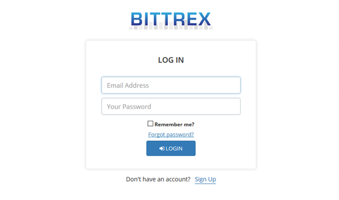
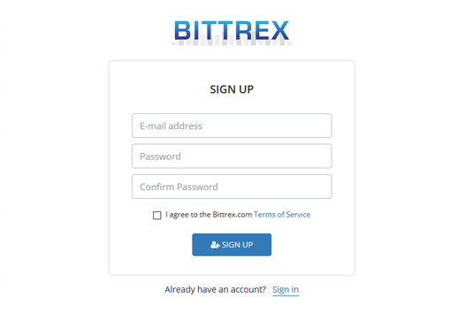
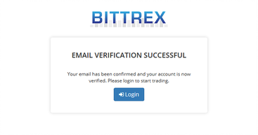
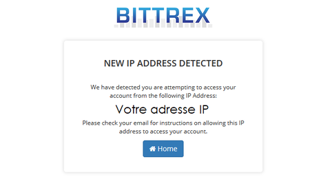
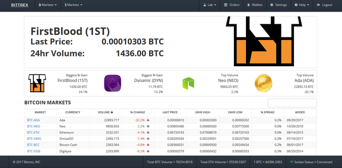
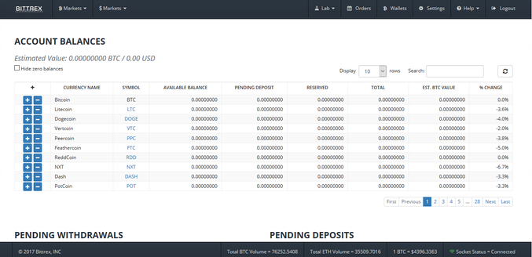
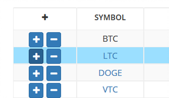
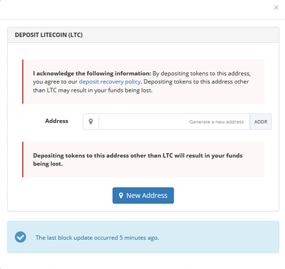
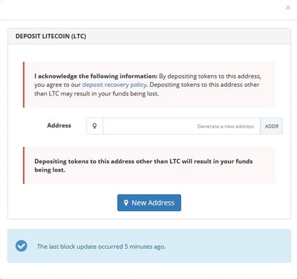

De quoi avez-vous besoin ?
Une adresse e-mail
De la crypto-monnaie sur un portefeuille électronique (Bitcoin, Litecoin, Ethereum, Dash...)
Remarque : si vous n'avez pas de crypto-monnaie , vous pouvez vous en procurez simplement
via la plateforme Coinbase (suivre notre guide).
L'inscription prends environ 5mn.
En revanche, l'envoie de fond sur votre compte Bittrex depuis votre portefeuille tel que Coinbase ou encore Paynium pour ne citer qu'eux prendra entre 15 et 30mn suivant
la crypto-monnaie que vous souhaitez envoyer.
Le trade en lui même (l'echange de crypto-monnaie, achat vente, est quasiment instantanée).
1. S'inscrire sur Bittrex
Pour réaliser son inscription sur Bittrex, il y a deux grandes étapes :
Valider une adresse e-mail
Réaliser sa première connexion sur le site
Afin de débuter la création de votre compte, cliquez sur le bouton "LOGIN"
("connexion" en Anglais) en haut à droite de la page d’accueil du site Bittrex.

Inscription -
Étape 1/2 : Comme vous n'avez pas encore de compte Bittrex, cliquez sur
"Sign Up" ("s'inscrire" en Anglais).

Renseignez maintenant votre adresse e-mail et choisissez un mot de passe. Cette adresse e-mail sera utile
pour valider l'inscription ainsi
que pour vos futures connexions sur Bittrex. N'oubliez pas d'accepter (et de lire !)
les conditions d'utilisations du site.

Un e-mail intitulé "Bittrex Verification" vous sera envoyé. Cliquez sur le lien afin de valider
votre adresse e-mail.
Si tout fonctionne, vous devriez arriver sur une page vous confirmant la vérification de votre compte.

Inscription - Étape 2/2 : Nous allons maintenant nous connecter sur Bittrex. Cliquez sur "Login"
("connexion" en Anglais) et, si besoin,
rentrez vos identifiants (adresse e-mail et mot de passe). Bittrex va alors détecter votre adresse IP.

Vous allez alors recevoir un mail sur votre adresse e-mail intitulé
"Bittrex IP Verification". Ouvrez-le et cliquez sur le lien "Click Here to Login";
vous serez redirigé directement sur votre compte Bittrex.
Vous voilà désormais inscrit. Notez que le site pourra éventuellement vous demander plus d'informations
(Nom, Prénom, Adresse...) en fonction de votre activité de trading.
2. Déposer des fonds sur la plateforme
Pour déposer des fonds sur Bittrex, il y a deux grandes étapes :
Créer un portefeuille électronique dédié
Transférer de la crypto-monnaie sur Bittrex
Afin de débuter la dépose de fonds sur Bittrex, connectez-vous au site.
Vous devriez vous trouver sur la page d’accueil.

Déposer des fonds - Étape 1/2 - Créer un portefeuille : Avant de pouvoir déposer des crypto-monnaies
sur Bittrex, il vous faut créer un portefeuille électronique sur le site. Si vous souhaitez
transférer des Bitcoins, il faudra créer un portefeuille Bitcoin. Si vous souhaitez transférer
des Litecoins, il faudra créer un portefeuille Litecoin. Notez que la plupart des crypto-monnaies
s'échangent contre du Bitcoin. Pour la suite, il sera donc plus simple de transférer du Bitcoin
directement, plutôt qu'une autre crypto-monnaie (Ethereum, Litecoin...).
Sur la page d’accueil de votre compte Bittrex, cliquez sur Wallets ("portefeuilles" en Anglais)
dans les onglets en haut du site. Vous arrivez alors sur un aperçu de vos fonds.
Comme vous venez de vous inscrire, et que vous n'avez pas encore déposé de crypto-monnaies
sur votre compte, les balances (correspondant à vos fonds) sont toutes à zéro.

Pour créer un portefeuille, il vous suffit de cliquer sur l’icône "+". L'icône "+" servira
par la suite à créditer votre portefeuille Bittrex (via par exemple un portefeuille CoinBase
de la même crypto-monnaie). L’icône "-" vous servira à réaliser un versement ou faire un retrait.
Pour ce tutoriel, nous allons créer un portefeuille Litecoin. Nous cliquons donc sur l'icône
"+" de la ligne Litecoin.

Afin de créer votre portefeuille (matérialisé par une suite de 34 caractères alphanumériques),
cliquez tout simplement sur "New Address" ("nouvelle adresse" en Anglais). Par ailleurs,
Bittrex rappelle que cette adresse est spécifique à la crypto-monnaie Litecoin et qu'un envoi,
par exemple, de Bitcoin, serait perdu.

Bittrex mettra ensuite une dizaine de secondes
à de générer une adresse. L'adresse "LaoryfU4zwacwExq5cg7ymtXq5vnJNpGvn" a, dans notre
cas, été générée.